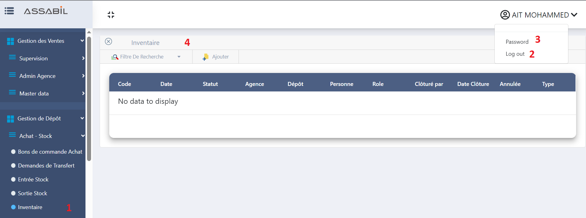
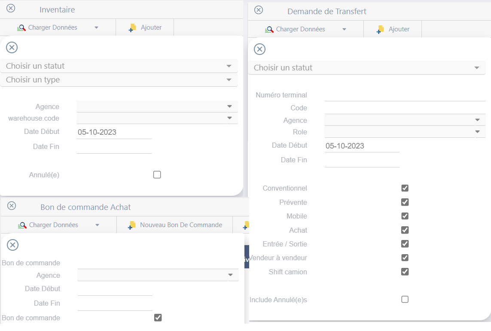

Fonctionnalités et Fonctions
Après votre connexion, vous verrez un panneau latéral pour la navigation entre les pages. Les pages disponibles dépendront de votre rôle dans le compte.
- Panneau de Navigation des Pages.
- Déconnexion de Votre Compte.
- Changer le Mot de Passe de Votre Compte.
- Affichage de la Page Principale Sélectionnée.

L'interface d'Assabil est simple et intuitive, avec une table principale, des filtres en haut et des boutons pour gérer les données.
